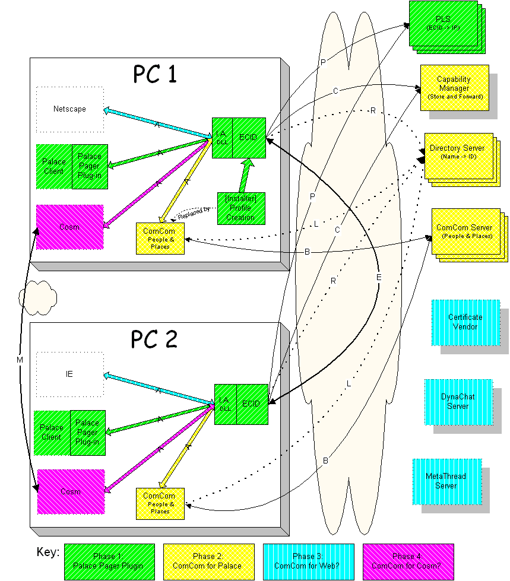

ECID & ComCom Proposed Networking Diagram
Fouth Draft, 8/4/98 by F. Randall
Farmer
Copyright ©1998, Electric Communities, All Rights Reserved.
Proprietary and Confidential. Do not distribute.

Desciptions of the various modules are found in the Complete
ComCom Components document. The original
Visio 5.0 document is available.
The appliations boxes surrounded with a broken line do not show all
of their network connections here. Servers
for the PC-side applications are not shown in order to simplify the diagram
and focus on the ComCom/ECID connectivity. Changes
from last version are in dark green.
There is a registration/authorization pattern
emerging for both the Directory and ComCom servers. I expect to integrate
that in the next version of this document.
Connection types
A: Application message traffic
All identity and location information is exchanged between ECID and other
applications over these connections. Web browsers already support this
kind of communication. The Palace, 'Cosm and 3rd Party applications will
need to include the inter application communications library which EC will
provide via open source to the net. This uses standard "plug-in" techniques
and is required for all supported platforms (Win95,
Mac, and Unix.)
B: (Buddies) ComCom traffic
The ComCom Client connects using standard internet protocols to a ComCom
server. The client passes ID & Location information it gets via a type-A
message pipe from ECID to the server. In turn, the server notifies other
authorized [see PO Box server description] ComCom clients of location and
status. These connections are unsecured and as lightweight as possible.
The servers will need to cope with thousands of connections a minute and
can't afford the overhead of authentication. See ComCom
Identity Verification for a pattern to allow users to explicitly verify
user identity without touching the ComCom server. I've provided a sample
connection history for a typical palace session.
C: Capability transfer traffic
ComCom and other applications will want to ask ECID to get capabilities
from other ECIDs on the net (Usually the result of a type-L
directory lookup connection). If the target ECID is not online, the P.O.
Box will hold requests and their replies. Naturally, when ECID starts up,
it will need this connection to check for requests. These connections require
authentication, but are need not be done often (less than once per day.)
E: ECID to ECID traffic
The core of peer-to-peer communication. Fully authenticated connection.
Often type-P traffic (a PLS lookup) will proceed establishing
this connection. Can be used for secure peer-peer chat. Used (on-demand)
to validate identity information for ComCom. Also used for direct capability
transfer (short circuiting the type-C traffic.)
In Phase 1, type-E messages are limited to capability
transfer, @page (aka telepathy), and @whereis messages.
L: Directory Lookup traffic
A simple LDAP connection is used to lookup IDs (including, but not limited
to ECIDs) from arbitrary text search criteria. This is how you find the
digital IDs of your old friend Mark Machismo from Minnesota. The application
that is doing the lookup will parse the record and make a connection to
the appropriate server. In the case of adding my friend to ComCom, it'll
look up the ECID (registered previously with a type-R
connection) and then ask ECID (via the type-A connection)
to get the capabilities to watch him. Theses connections are infrequent,
unsecured, and on-demand.
FYI: The traffic from there is -
P (fail) C (cache request) (wait
a day or more) C (get capabilities) A
(hand to ComCom) B (send to server) or
P (success) E (get capabilities)
A (hand to ComCom) B (send to server)
M: Cosm to Cosm traffic
Microcosm traffic is not a part of this spec per say. It is included to
dispel any confusion about ECIDs role in communication. ECID does not handle
all secure or "E" message traffic. Only identity and location information
that needs to go to other processes.
P: PLS Registration/Lookup traffic
The PLS messaging on this connection is that which is currently spec'd
for Microcosm: Register and Lookup IP address by E-style process id. The
r167 compatible implementation is inadequate as is because it doesn't use
authenticated connections for registration and doesn't cope with duplicate
process registrations. The full current spec is [where?].
Resitrations are refreshed every [hour?].
R: Directory Registration traffic
An authenticated registration [Jeff, please help here] scheme is
used in conjunction with the LDAP based servers to register ECIDs and allow
for their editing and deletion. Though the authenticated connections are
heavyweight, they are only formed when a new identity is created (very
rare), or when the identity is edited in some way (a name change, email
change, etc.)
Excluded traffic
The traffic related to external certificate authority, DynaChat, MetaThread,
and group proxy servers are not included here because they are not required
for the absolute minimum functionality of ComCom/ECID to work with Palace/Cosm
software. [Traffic issues for these connections is TBD] Traffic
for the Palace, Cosm, Web, and any other future 3rd party servers is not
shown because it doesn't affect the design in any significant way.
Some important traffic patterns
ComCom identity verification pattern
[Note: Since the first draft of this document,
a design has been proposed that would provide lightwieght authentication
on Type-B messages, so this next section may be moot.
On the other hand, there may be other reasons to do an explicit identity
verification, so I've left it in for now.]
ComCom connections (type B) may be unsecured, as they
must be as lightweight as possible. This presents a spoofing problem, as
a malicious program could connect to a ComCom server and present status
and location information in another, unknowing user's stead. One work around
is to provide a Verify User option in ComCom. This feature would use the
ECID the user already has on file to "call-back" the true owner of the
ECID process to verify his ComCom session. This verification process does
not touch the ComCom server. The message pattern is:
User 1 is potentially being spoofed. User 2 chooses Verify User from
ComCom.
#2 uses his stored ECID for #1:
P (lookup: fails) Result: #1 is being spoofed.
P (lookup: succeeds) #2 uses connection capability
granted by #1:
E (CheckValidComCom: fails) Result #1
is being spoofed
E (CheckValidComCom: succeeds) Result
#1 is validated.
Palace location pattern
The pattern for the Palace connecting to ComCom and reporting avatar
and location information is as follows:
(Launch ECID, ComCom and the Palace application in that order) [Handle
other startup orders?]
Ac (Connect ComCom to ECID) Send ECID information
to ComCom, then on to the server via B
Ap (Connect Palace to ECID) Send ID information
to the Palace application.
(Palace user selects server and avatar) Palace client may send
ECID info to palace server along with standard regcode, etc.
Via Ap (Local ident: Avatar Name) via Ac
(same message) via B (same)
(Avatar arrives in room) via Ap (Location
change: Server Name, Room Name) via Ac (same)
via B (same)
The favorites server then fans the message(s) out through B1..n
connections. [Critical TBD: are
B connections Push or Pull?]